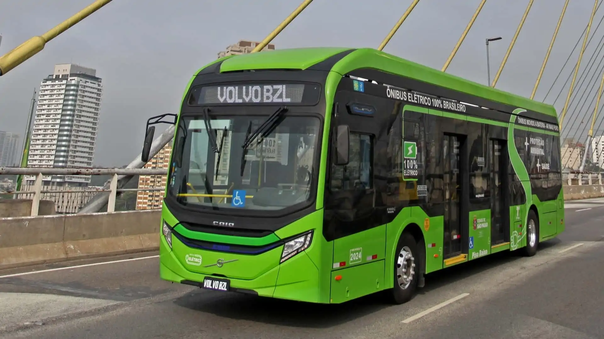

Volvo lança nova linha de ônibus elétricos para transporte urbano
A Volvo apresenta sua nova geração de ônibus 100% elétricos, focados em sustentabilidade e eficiência energética para cidades que buscam reduzir a poluição e melhorar a mobilidade urbana.
Com design moderno, autonomia ampliada e conforto superior, os modelos prometem revolucionar o transporte coletivo, oferecendo uma solução mais limpa e silenciosa para os centros urbanos.
Os novos ônibus contam com tecnologia avançada de baterias, sistemas inteligentes de gerenciamento energético e infraestrutura de recarga rápida, permitindo maior flexibilidade para as frotas.
Além disso, a Volvo investiu em materiais sustentáveis e processos de fabricação ecológicos, reforçando seu compromisso com a inovação e responsabilidade ambiental.
← Voltar ao Blog